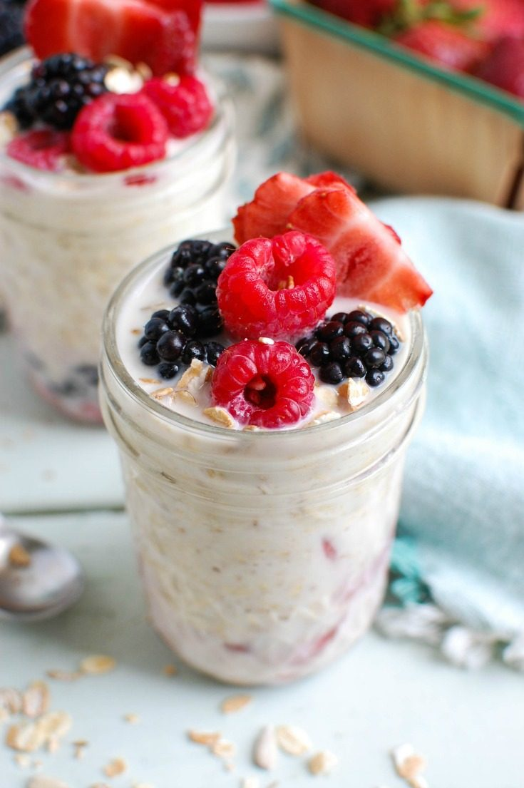

Overnight oats

A hunger breaking and easy to prepare breakfast. Can be customized with toppings of choice like walnuts, banana slices etc. but I like a frozen blueberries and cranberries combo. Be sure not to do it the night before!
Sources :
Ingredients :
- 1 cup large oat flakes
- 1 cup soy milk
- 1/2 cup plant-based yogourt
- 1/4 cup frozen cranberries
- 1/4 cup frozen blueberries
- 1/4 cup fresh ground flax seed
- 5 dattes cut into pieces
- Nuts of choice to taste
Steps :
- Stir in all the ingredients in a glass bowl with a cover
- Put in refrigerator overnight (approx. 12-16 hours)
- Serve with a bit of your favorite nuts. Batch can be scaled up and be kept in the fridge for an extra day